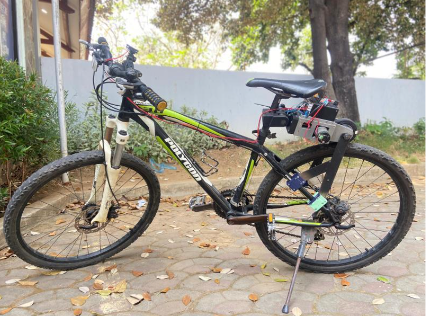

Smart E-Bike Assist Kit with ESP32
Intelligent Pedal Assistance for a Smoother Ride 🚴♂️

Starting a bicycle from a standstill—especially uphill—can be the most physically demanding part of riding. This project addresses that challenge by developing an ESP32-based E-Bike assist kit that provides automatic motor assistance during the initial pedaling phase.
The system intelligently detects rider input and delivers a smooth boost, making cycling more comfortable and accessible.
⚙️ How the System Works
The system continuously monitors pedaling speed using a rotary encoder and responds dynamically:
- RPM < 5 → Motor activates to provide initial assist
- RPM ≥ 40 → Motor stops as normal pedaling is achieved
This creates a seamless transition between assisted and manual riding, ensuring efficiency and natural control.
🔌 Key Components
- Microcontroller → ESP32 for system control
- Motor Driver → BTS7960 for high-current motor control
- Motor → PG45 geared DC motor for torque
- Power Module → XL7015 step-down regulator
- Display → OLED for RPM and battery status
- Sensor → Rotary encoder for speed measurement
🧠 Intelligent Control with PID
To ensure smooth and responsive assistance, the motor is controlled using a PID (Proportional–Integral–Derivative) algorithm.
- Gradual motor acceleration (no sudden jerks)
- Stable and controlled output
- Dynamic response to changing RPM
This ensures a natural riding experience that feels intuitive rather than mechanical.
🛠️ My Role in the Project
I was responsible for both mechanical design and embedded system development, making this a fully integrated engineering project.
📐 Mechanical Design (CAD)
Using SolidWorks, I designed motor mounts, enclosures, and structural supports optimized for strength, alignment, and ease of installation.
🏭 Fabrication & Assembly
I manufactured parts using 3D printing, assembled all components, and installed the system onto a bicycle.
💻 Embedded System Development
I developed firmware for RPM measurement, battery monitoring via ADC, and PID-based motor control with automatic assist logic.
🔗 System Integration & Testing
I handled wiring, full system integration, and conducted real-world testing to optimize responsiveness and stability.
🚀 Why This Project Matters
- ✅ Assists riders during startup and uphill conditions
- ✅ Improves comfort and accessibility
- ✅ Demonstrates real-time embedded control systems
- ✅ Integrates mechanical, electrical, and software engineering
🌟 Final Thoughts
This project shows how a simple idea—assisting a bicycle at startup—can evolve into a smart and responsive system through engineering. By combining sensors, control algorithms, and mechanical design, it delivers a practical solution for everyday mobility.
It’s a strong example of how embedded systems can transform conventional machines into intelligent and adaptive devices.